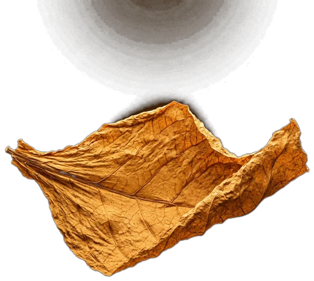
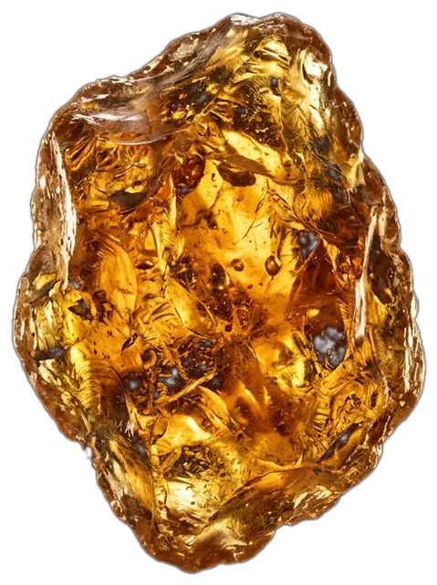
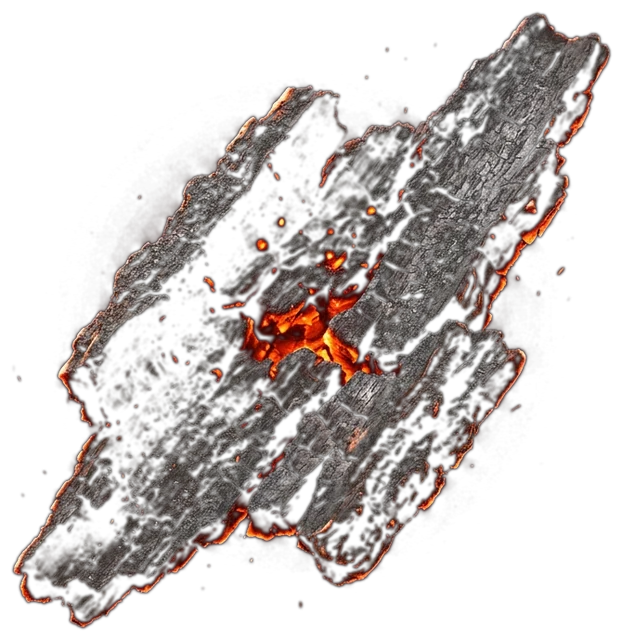
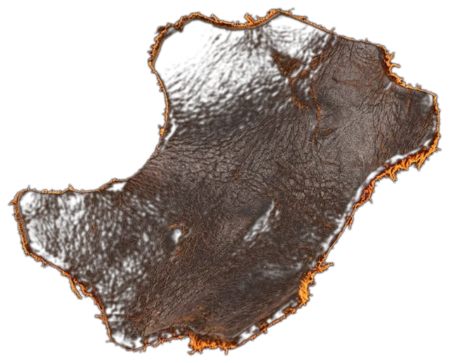

<title>Ombra Milano</title>
<link rel="preload" as="image" href="img/decanter-engraved-1536.webp" fetchpriority="high">
<link rel="preconnect" href="https://fonts.googleapis.com">
<link rel="preconnect" href="https://fonts.gstatic.com" crossorigin>
<link rel="stylesheet" href="https://fonts.googleapis.com/css2?family=Bodoni+Moda:opsz,wght@6..96,500;6..96,600&family=IBM+Plex+Mono:wght@400&family=Schibsted+Grotesk:wght@400;500&display=swap">
<style>
/* Ombra Milano, first screen. A blade of light opens the dark, the name rises from behind it,
   then the bottle emerges in depth: a real photograph with a depth map, so it turns in space under your hand */
:root {
  --black: #060505;
  --amber: #C8893E;
  --bone: #ECE4D6;
  --smoke: #968D81;   /* AA on black */
  --display: "Bodoni Moda", "Didot", Georgia, serif;
  --mono: "IBM Plex Mono", ui-monospace, monospace;
  --body: "Schibsted Grotesk", "Helvetica Neue", Arial, sans-serif;
  --gl: max(16px, env(safe-area-inset-left, 0px));
  --gr: max(16px, env(safe-area-inset-right, 0px));
  --pad: clamp(0px, 3vw, 40px);
  --hard: cubic-bezier(.7, 0, .1, 1);   /* masculine: slow start, decisive stop */
  --slow: cubic-bezier(.2, 0, .1, 1);
  color-scheme: dark;
}
* { box-sizing: border-box; }
html, body { margin: 0; background: var(--black); color: var(--bone); font-family: var(--body); font-size: 16px; line-height: 1.55; }
p, h1 { margin: 0; }
a { color: inherit; }
:focus-visible { outline: 1px solid var(--amber); outline-offset: 4px; }
.mono { font-family: var(--mono); font-size: 12px; letter-spacing: .12em; text-transform: uppercase; color: var(--smoke); }

.cta { position: relative; overflow: hidden; display: inline-flex; align-items: center; gap: 14px; padding: 17px 32px; border: 1px solid var(--amber); color: var(--bone); text-decoration: none; font-size: 13px; letter-spacing: .16em; text-transform: uppercase; background: rgba(6, 5, 5, .35); backdrop-filter: blur(6px); }
/* one hover metaphor: a blade of light crosses the button, like the one that opens the page */
.cta::before { content: ""; position: absolute; inset: 0; background: linear-gradient(100deg, transparent 30%, rgba(200, 137, 62, .4) 50%, transparent 70%); transform: translateX(-110%); transition: transform 1s var(--hard); }
.cta:hover::before { transform: translateX(110%); }
.cta:active { transform: scale(.98); }

.nav { position: fixed; inset: 0 0 auto; z-index: 10; display: flex; justify-content: space-between; align-items: center; padding: 24px calc(var(--gr) + var(--pad)) 0 calc(var(--gl) + var(--pad)); }
.nav ul { display: flex; gap: 28px; list-style: none; margin: 0; padding: 0; }
.nav a { text-decoration: none; transition: color .4s; }
.nav a:hover { color: var(--bone); }
.nav .book { color: var(--bone); border-bottom: 1px solid var(--amber); padding-bottom: 3px; }

.hero { position: relative; height: 100svh; min-height: 680px; overflow: hidden; }
#gl, .fallback { position: absolute; inset: 0; width: 100%; height: 100%; }
.fallback { object-fit: cover; object-position: 50% 60%; display: none; }
.no-gl #gl { display: none; }
.no-gl .fallback { display: block; }

/* ── The name. A blade of light is cut across the dark; the letters rise from behind it, heavy, one by one,
      then a glint runs over them like light over engraved metal ── */
.mast { position: absolute; z-index: 2; left: 0; right: 0; top: clamp(64px, 10vh, 104px); display: grid; justify-items: center; pointer-events: none; }
.word { position: relative; overflow: hidden; padding: 0 .04em .02em; }
.word h1 { font-family: var(--display); font-weight: 600; font-size: clamp(88px, 18.5vw, 310px); line-height: .82; letter-spacing: -.02em; display: flex; color: var(--bone); }
/* the glint: a band of warm light crosses the letters once; soft-light leaves the black untouched */
.word::after { content: ""; position: absolute; inset: 0; background: linear-gradient(100deg, transparent 40%, rgba(255, 236, 200, .95) 50%, transparent 60%); mix-blend-mode: soft-light; transform: translateX(-100%); animation: glint 1.6s var(--slow) 2.3s both; pointer-events: none; }
.word h1 span { display: inline-block; transform: translateY(102%); animation: rise 1.25s var(--hard) both; }
.word h1 span:nth-child(1) { animation-delay: .95s; }
.word h1 span:nth-child(2) { animation-delay: 1.05s; }
.word h1 span:nth-child(3) { animation-delay: 1.15s; }
.word h1 span:nth-child(4) { animation-delay: 1.25s; }
.word h1 span:nth-child(5) { animation-delay: 1.35s; }
@keyframes rise { to { transform: none; } }
@keyframes glint { to { transform: translateX(100%); } }
/* the blade: an amber hairline that cuts the screen open, then settles under the name */
.blade { width: min(86vw, 1180px); height: 1px; background: linear-gradient(90deg, transparent, var(--amber) 20%, #ffd9a0 50%, var(--amber) 80%, transparent); transform: scaleX(0); animation: cut 1s var(--hard) .2s both; }
@keyframes cut { to { transform: scaleX(1); } }
.city { margin-top: 18px; font-family: var(--mono); font-size: 12px; letter-spacing: 1.1em; padding-left: 1.1em; text-transform: uppercase; color: var(--smoke); animation: fade 1.2s var(--slow) 2.1s both; }

.side { position: absolute; z-index: 2; top: 54%; writing-mode: vertical-rl; }
.side.l { left: calc(var(--gl) + var(--pad)); transform: translateY(-50%) rotate(180deg); }
.side.r { right: calc(var(--gr) + var(--pad)); transform: translateY(-50%); }
.foot { position: absolute; z-index: 2; left: calc(var(--gl) + var(--pad)); right: calc(var(--gr) + var(--pad)); bottom: clamp(28px, 5vh, 48px); display: grid; grid-template-columns: 1fr auto 1fr; align-items: end; gap: 24px; }
.foot .r { text-align: right; color: var(--smoke); font-size: 15px; }
.late { animation: fade 1.4s var(--slow) 5.6s both; }

/* ── The ingredients, weightless around the bottle: tobacco, resin, leather, charred oak.
      Near pieces are large and out of focus, far ones small and soft; all drift and turn slowly, lit by the beam ── */
.float { position: absolute; inset: 0; z-index: 1; pointer-events: none; }
.float img { position: absolute; left: 0; top: 0; width: var(--w); opacity: 0; will-change: transform, opacity, filter; }
@keyframes fade { from { opacity: 0; } }

@media (prefers-reduced-motion: reduce) {
  .word::after, .word h1 span, .blade, .city, .late { animation: none; transform: none; }
  .float img { opacity: .8; }
  .cta::before { transition: none; }
}
@media (max-width: 760px) {
  .nav ul, .side, .foot .l, .foot .r { display: none; }
  .nav { justify-content: flex-end; }
  .mast { top: 76px; }
  .word h1 { font-size: 22vw; }
  .city { letter-spacing: .8em; font-size: 11px; }
  .foot { grid-template-columns: 1fr; justify-items: center; }
  .float img { width: calc(var(--w) * 1.6); }
}
</style>

<header class="nav late">
  <ul class="mono"><li><a href="#collection">Collection</a></li><li><a href="#atelier">Atelier</a></li><li><a href="#boutique">Boutique</a></li></ul>
  <a class="book mono" href="#book">Book a consultation</a>
</header>

<main>
  <section class="hero" aria-labelledby="name">
    <canvas id="gl" aria-hidden="true"></canvas>
    <div class="float" aria-hidden="true">
      <!-- x, y in % of the screen; z: -1 far behind … 1 close to the lens -->
      
      
      
      
      
      
      
      
    </div>
    
    <div class="mast">
      <div class="word"><h1 id="name" aria-label="Ombra"><span aria-hidden="true">O</span><span aria-hidden="true">M</span><span aria-hidden="true">B</span><span aria-hidden="true">R</span><span aria-hidden="true">A</span></h1></div>
      <div class="blade" aria-hidden="true"></div>
      <p class="city">Milano</p>
    </div>
    <p class="side l mono late">Perfume house · Brera</p>
    <p class="side r mono late">Seven perfumes · Est. 2026</p>
    <div class="foot late">
      <p class="l mono">Nº 3 Ambra Nera<br>Batch 07 · 120 bottles</p>
      <a class="cta" href="#book">Book a consultation <span aria-hidden="true">→</span></a>
      <p class="r">Composed in Milan for the hours<br>after dark. Poured by hand.</p>
    </div>
  </section>
</main>

<script>
// The first screen, in three acts:
// 0–2.4s the name rises (CSS) · 2.2–4.8s the decanter emerges from the dark in depth (WebGL: photo + depth map)
// 3.6s+ the ingredients drift in around it, weightless · 4.8–6.2s the light reads the engraving · then the light is the visitor's
(() => {
  const hero = document.querySelector('.hero');
  const canvas = document.getElementById('gl');
  const reduce = matchMedia('(prefers-reduced-motion: reduce)').matches;
  const small = () => innerWidth < 760;
  const clamp01 = x => Math.min(Math.max(x, 0), 1);
  const outCubic = x => 1 - Math.pow(1 - clamp01(x), 3);
  const inOut = x => { x = clamp01(x); return x < .5 ? 4 * x * x * x : 1 - Math.pow(-2 * x + 2, 3) / 2; };

  // shared state: pointer, light, time
  let mx = 0, my = 0, tx = 0, ty = 0, lx = .5, ly = .5, tlx = .5, tly = .5, touched = false;
  hero.addEventListener('pointermove', e => {
    const r = hero.getBoundingClientRect();
    tx = (e.clientX - r.left) / r.width * 2 - 1;
    ty = (e.clientY - r.top) / r.height * 2 - 1;
    tlx = (e.clientX - r.left) / r.width;
    tly = 1 - (e.clientY - r.top) / r.height;
    touched = true;
  });
  let visible = true;
  new IntersectionObserver(([e]) => { visible = e.isIntersecting; }).observe(hero);

  // ── the floating ingredients
  const pieces = [...hero.querySelectorAll('.float img')].map((el, i) => ({
    el, x: +el.dataset.x, y: +el.dataset.y, z: +el.dataset.z, r: +el.dataset.r, seed: i * 1.7
  }));
  // each piece travels a slow ellipse around the bottle: behind it (far, dim, soft) and past the lens (large, out of focus)
  const orbits = pieces.map((p, i) => ({ a0: i / pieces.length * Math.PI * 2 + i * .7, sp: .14 + (i % 3) * .03, ry: .1 + (i % 4) * .06, h: (i % 5 - 2) * .09, tilt: i % 2 ? 1 : -1 }));
  function drawPieces(t) {
    const W = hero.clientWidth, H = hero.clientHeight, mobile = W < 760;
    const rx = (mobile ? .52 : .34) * W, cy = .52;
    pieces.forEach((p, i) => {
      const o = orbits[i];
      const appear = reduce ? 1 : outCubic((t - 3.6 - i * .25) / 2.4);
      const ang = o.a0 + (reduce ? 0 : t * o.sp * o.tilt);
      const z = Math.sin(ang);                                   // -1 behind the bottle … 1 at the lens
      const x = W / 2 + Math.cos(ang) * rx + mx * 40 * (z + .4);
      const y = H * (cy + o.h + Math.sin(ang * 2 + i) * .04) + z * o.ry * H * .5 + my * 24 * (z + .4) + (1 - appear) * 50;
      const scale = .55 + (z + 1) * .5 + (z > .75 ? (z - .75) * 3 : 0);
      // lit by the beam, darker behind the bottle
      const near = Math.exp(-((x / W - lx) ** 2 * (W / H) ** 2 + ((1 - y / H) - ly) ** 2) / .09);
      const bright = (.25 + near * .9) * (z < -.2 ? .45 : 1) * (z > .8 ? .6 : 1);
      const blur = z > .7 ? (z - .7) * 30 : z < -.3 ? (-z - .3) * 5 : 0;
      // near the bottle's centre line a piece dissolves: behind, the bottle hides it; in front, it never covers the bottle
      const hidden = 1 - Math.exp(-Math.pow((x - W / 2) / (W * .13), 2)) * Math.min(Math.abs(z) * 3, 1);
      p.el.style.transform = `translate3d(${x}px, ${y}px, 0) translate(-50%, -50%) rotate(${p.r + t * 6 * o.tilt + Math.sin(t * .2 + i) * 10}deg) scale(${scale.toFixed(3)})`;
      p.el.style.filter = `blur(${blur.toFixed(1)}px) brightness(${bright.toFixed(2)})`;
      p.el.style.opacity = (appear * hidden * (z < -.6 ? .55 : .95)).toFixed(3);
      p.el.style.zIndex = z > 0 ? 3 : 1;
    });
  }

  // ── the decanter in depth
  const gl = canvas.getContext('webgl', { antialias: false });
  let render = () => {};
  if (gl) setupGL(); else hero.classList.add('no-gl');

  function setupGL() {
    const vs = `attribute vec2 p; varying vec2 v; void main(){ v = p * .5 + .5; gl_Position = vec4(p, 0., 1.); }`;
    const fs = `precision highp float;
    varying vec2 v;
    uniform sampler2D img, dep;
    uniform vec2 res, mouse, light;
    uniform float aspect, time, zoom, mobile, reveal, smoke, glint;
    float hash(vec2 p){ return fract(sin(dot(p, vec2(12.9898, 78.233))) * 43758.5453); }
    float noise(vec2 p){ vec2 i = floor(p), f = fract(p); f = f * f * (3. - 2. * f);
      return mix(mix(hash(i), hash(i + vec2(1, 0)), f.x), mix(hash(i + vec2(0, 1)), hash(i + vec2(1, 1)), f.x), f.y); }
    float fbm(vec2 p){ float s = 0., a = .5; for (int i = 0; i < 5; i++) { s += a * noise(p); p *= 2.03; a *= .5; } return s; }
    void main(){
      vec2 px = v * res;
      float w = mobile > .5 ? max(res.x, res.y * aspect) : res.y * aspect * 1.25;
      float h = w / aspect;
      vec2 uv = vec2((px.x - (res.x - w) * .5) / w, 1. - (px.y - (res.y - h) * mix(.12, .42, mobile)) / h);
      vec2 c = vec2(.5, .58);
      uv = c + (uv - c) / (1. + zoom);
      float d = texture2D(dep, uv).r;
      uv -= mouse * (d - .55) * vec2(.045, .03);
      d = texture2D(dep, uv).r;
      vec3 col = texture2D(img, uv).rgb;
      // emergence: nearest surfaces come out of the dark first, the room last
      float emerge = smoothstep(1. - reveal * 1.25, 1.2 - reveal * 1.25, 1. - d);
      vec2 lp = (px - light * res) / res.y;
      float spot = exp(-dot(lp, lp) / .04);
      col *= (.5 + spot * (.55 + d * .75)) * emerge;
      col += vec3(.22, .13, .05) * spot * d * emerge * .35;
      // the liquid lives: slow candle-like ripples of light through the amber
      float amber = clamp((col.r - col.b) * 3. - .15, 0., 1.) * smoothstep(.5, .7, d);
      col += col * amber * (fbm(uv * vec2(9., 14.) + vec2(time * .12, -time * .2)) - .45) * .7;
      // a softbox pass: a diagonal band of light crosses the glass every few seconds
      float band = exp(-pow((uv.x * .8 + uv.y * .45 - glint) * 16., 2.));
      col += vec3(1., .93, .8) * band * smoothstep(.6, .85, d) * smoothstep(.15, .5, dot(col, vec3(.33))) * .9;
      col *= smoothstep(0., .22, uv.x) * smoothstep(1., .78, uv.x) * smoothstep(0., .06, uv.y);
      if (uv.x < 0. || uv.x > 1. || uv.y < 0. || uv.y > 1.) col = vec3(0.);
      // a thread of smoke from the stopper
      vec2 sp = uv - vec2(.5, .3);
      float hgt = -sp.y;
      float wob = (fbm(vec2(uv.y * 4. - time * .25, time * .1)) - .5) * hgt * .9;
      float width = .015 + hgt * .16;
      float plume = fbm(vec2(sp.x * 9. + time * .05, uv.y * 6. + time * .6));
      col += vec3(.55, .48, .4) * plume * exp(-pow((sp.x - wob) / width, 2.)) * smoothstep(0., .04, hgt) * smoothstep(.42, .08, hgt) * smoke * (.35 + spot * 1.4);
      // dust in the beam
      vec2 g = px / res.y * 60.;
      vec2 cell = floor(g + vec2(0., time * .5));
      float mote = smoothstep(.06, 0., length(fract(g + vec2(0., time * .5)) - vec2(hash(cell + 3.), hash(cell + 7.)))) * step(.93, hash(cell));
      float beam = exp(-pow((v.x - .5) * res.x / res.y / .16, 2.)) * smoothstep(.3, .9, v.y);
      col += vec3(1., .85, .6) * mote * (beam * .3 + spot * .45) * reveal;
      // embers rising off the stone now and then
      vec2 eg = px / res.y * vec2(34., 22.);
      vec2 ec = floor(eg - vec2(0., time * 1.1));
      float eh = hash(ec + 11.);
      float ember = smoothstep(.09, 0., length(fract(eg - vec2(sin(time + eh * 6.) * .2, time * 1.1)) - vec2(hash(ec + 5.), .5))) * step(.985, eh);
      float zone = exp(-pow((v.x - .5) * res.x / res.y / .22, 2.)) * smoothstep(.05, .35, v.y) * smoothstep(.85, .45, v.y);
      col += vec3(1., .45, .12) * ember * zone * 1.6 * reveal;
      col += (hash(px + time) - .5) * .025;
      gl_FragColor = vec4(col, 1.);
    }`;
    const sh = (t, src) => { const o = gl.createShader(t); gl.shaderSource(o, src); gl.compileShader(o); return o; };
    const prog = gl.createProgram();
    gl.attachShader(prog, sh(gl.VERTEX_SHADER, vs));
    gl.attachShader(prog, sh(gl.FRAGMENT_SHADER, fs));
    gl.linkProgram(prog);
    if (!gl.getProgramParameter(prog, gl.LINK_STATUS)) { hero.classList.add('no-gl'); return; }
    gl.useProgram(prog);
    gl.bindBuffer(gl.ARRAY_BUFFER, gl.createBuffer());
    gl.bufferData(gl.ARRAY_BUFFER, new Float32Array([-1, -1, 1, -1, -1, 1, 1, 1]), gl.STATIC_DRAW);
    const loc = gl.getAttribLocation(prog, 'p');
    gl.enableVertexAttribArray(loc);
    gl.vertexAttribPointer(loc, 2, gl.FLOAT, false, 0, 0);
    const u = n => gl.getUniformLocation(prog, n);
    const load = (src, unit) => new Promise((ok, fail) => {
      const im = new Image();
      im.onload = () => {
        gl.activeTexture(gl.TEXTURE0 + unit);
        gl.bindTexture(gl.TEXTURE_2D, gl.createTexture());
        gl.texImage2D(gl.TEXTURE_2D, 0, gl.RGB, gl.RGB, gl.UNSIGNED_BYTE, im);
        gl.texParameteri(gl.TEXTURE_2D, gl.TEXTURE_MIN_FILTER, gl.LINEAR);
        gl.texParameteri(gl.TEXTURE_2D, gl.TEXTURE_MAG_FILTER, gl.LINEAR);
        gl.texParameteri(gl.TEXTURE_2D, gl.TEXTURE_WRAP_S, gl.CLAMP_TO_EDGE);
        gl.texParameteri(gl.TEXTURE_2D, gl.TEXTURE_WRAP_T, gl.CLAMP_TO_EDGE);
        ok(im);
      };
      im.onerror = fail;
      im.src = src;
    });
    const size = () => {
      const dpr = Math.min(devicePixelRatio, 2);
      canvas.width = hero.clientWidth * dpr;
      canvas.height = hero.clientHeight * dpr;
      gl.viewport(0, 0, canvas.width, canvas.height);
    };
    addEventListener('resize', size);
    size();
    Promise.all([load(`img/decanter-engraved-${small() ? 768 : 1536}.webp`, 0), load('img/decanter-engraved-depth.png', 1)]).then(([im]) => {
      gl.uniform1i(u('img'), 0); gl.uniform1i(u('dep'), 1);
      gl.uniform1f(u('aspect'), im.width / im.height);
      render = t => {
        gl.uniform2f(u('res'), canvas.width, canvas.height);
        gl.uniform2f(u('mouse'), mx, my);
        gl.uniform2f(u('light'), lx, ly);
        gl.uniform1f(u('time'), t);
        gl.uniform1f(u('reveal'), reduce ? 1 : outCubic((t - 2.2) / 2.6));
        gl.uniform1f(u('smoke'), reduce ? 1 : outCubic((t - 4.6) / 1.5));
        gl.uniform1f(u('zoom'), (reduce ? 0 : (1 - outCubic((t - 2.2) / 3)) * .1) + Math.min(scrollY / innerHeight, 1) * .25);
        gl.uniform1f(u('mobile'), small() ? 1 : 0);
        // the softbox pass repeats every 7 seconds, after the engraving has been read
        const gp = ((t - 6.5) % 7 + 7) % 7;
        gl.uniform1f(u('glint'), t < 6.5 ? -9 : -0.2 + gp / 1.8 * 1.6);
        gl.drawArrays(gl.TRIANGLE_STRIP, 0, 4);
      };
    }).catch(() => hero.classList.add('no-gl'));
  }

  const start = performance.now();
  (function frame(now) {
    requestAnimationFrame(frame);
    if (!visible) return;
    const t = reduce ? 20 : (now - start) / 1000;
    // the light: waits on the bottle, reads the engraving left to right, then drifts until the visitor takes it
    if (!touched) {
      if (t < 4.8) { tlx = .5; tly = .5; }
      else if (t < 6.2) { const q = inOut((t - 4.8) / 1.4); tlx = .42 + q * .16; tly = .4; }
      else { const q = t - 6.2; tlx = .5 + Math.sin(q * .3) * .16; tly = .44 + Math.cos(q * .23) * .12;
             // turntable: a slow, eased turn to one side, a pause, then to the other
             tx = Math.sin(q * .42) * .95; ty = Math.cos(q * .23) * .25; }
    }
    mx += (tx - mx) * .05; my += (ty - my) * .05;
    lx += (tlx - lx) * .07; ly += (tly - ly) * .07;
    render(t);
    drawPieces(t);
  })(start);
})();
</script>
